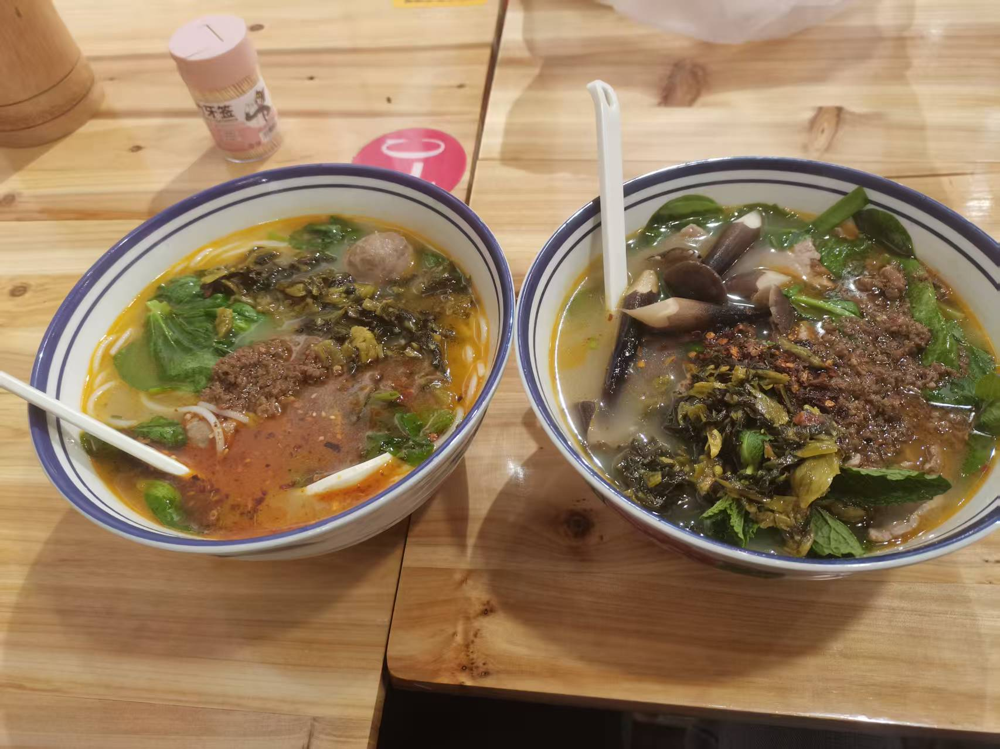
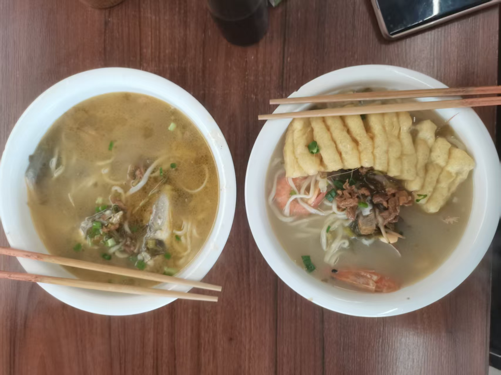
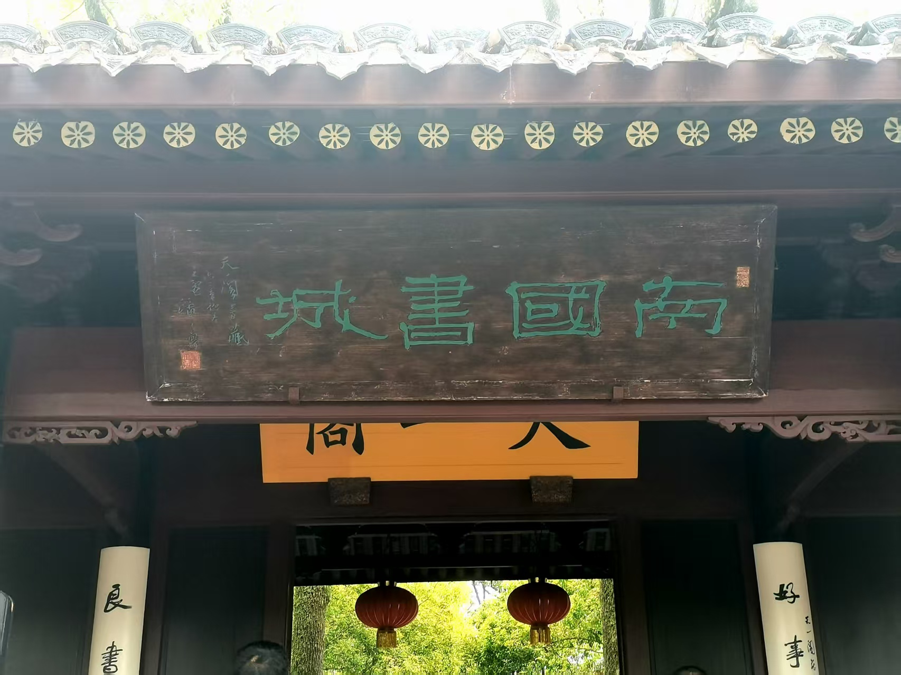
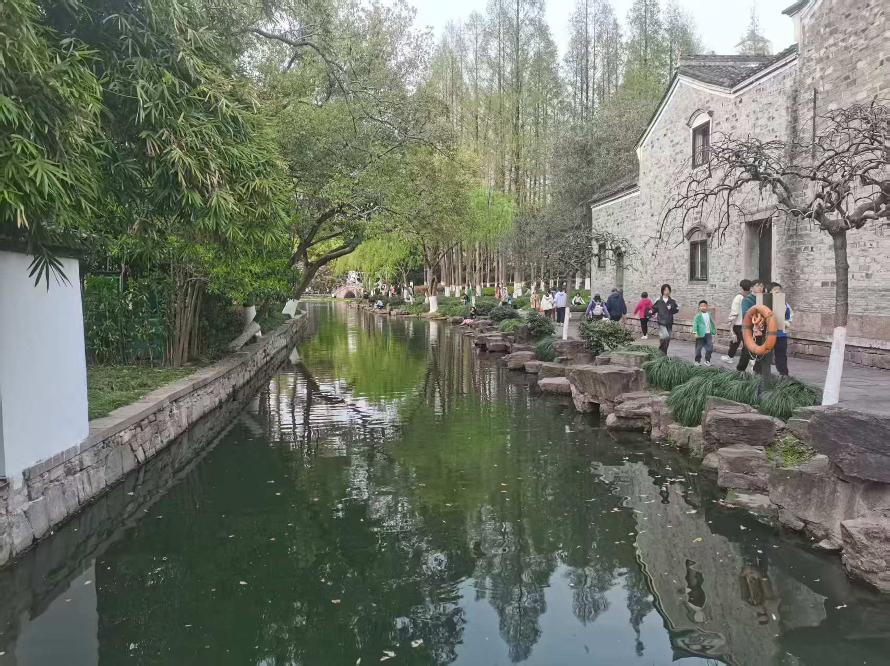
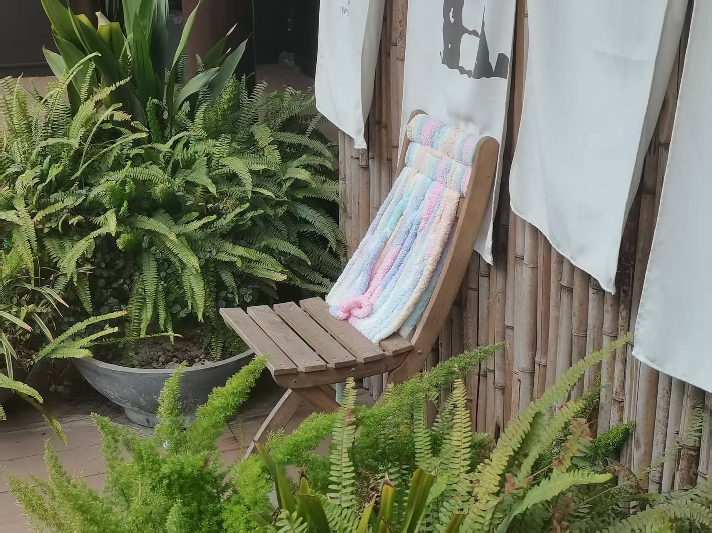
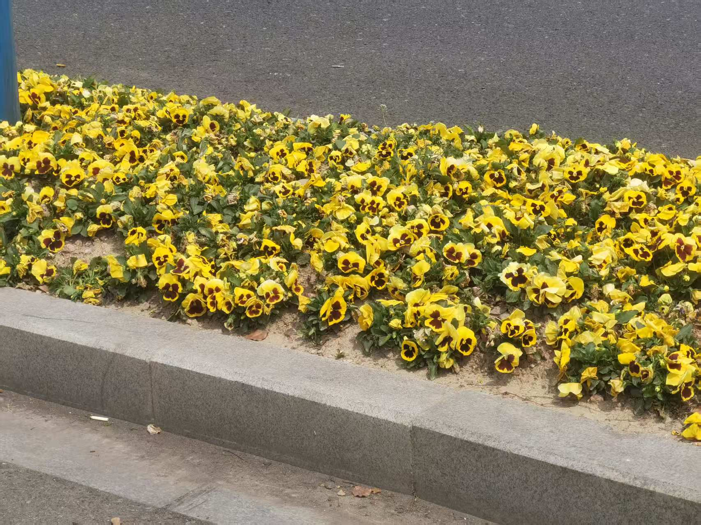
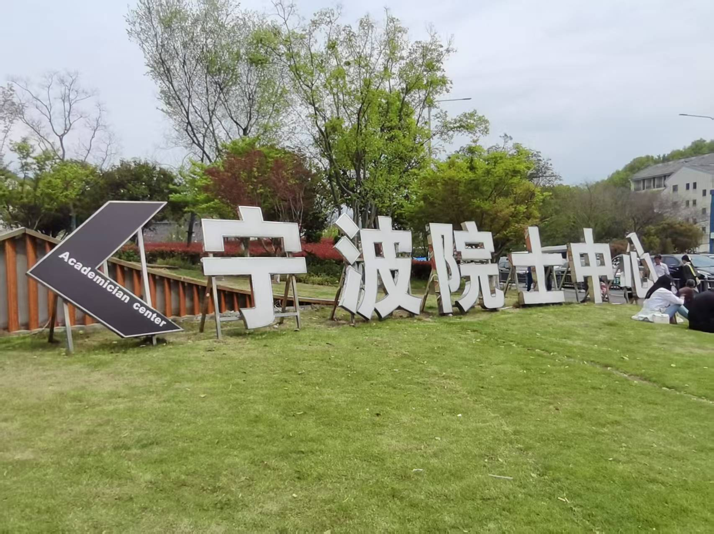
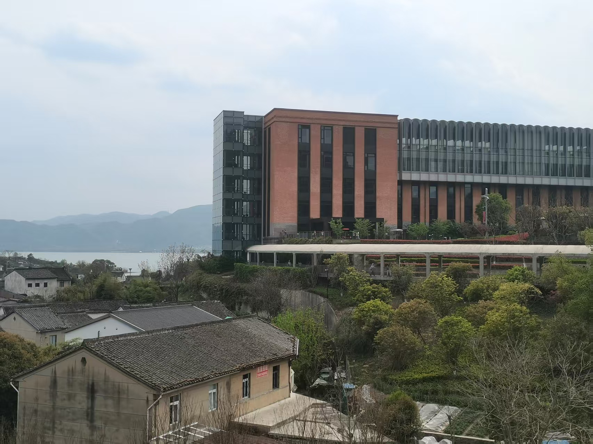
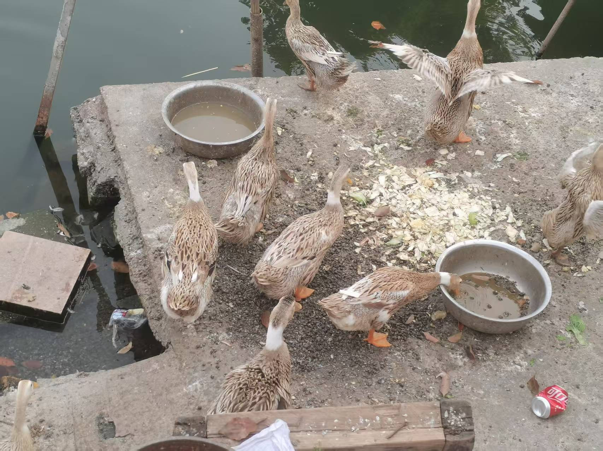

泥嚎！！！
4.3:
晚上七点半到宁波。猪猪在地铁站门口等待，在路口宝宝端着好喝的豆浆出现在猪猪身后，抱抱！宝宝领着猪猪入住海友，环保风格。
骑车去商场，发现火锅关门。宝宝喂猪猪青团。下楼去街对面嗦粉。云南米粉，很鲜美。

4.4:
中午吃海鲜面。猪猪点的是蛏王面，里面有很多蛏子，味道鲜美，微苦，还有一些小黄鱼；宝宝点的是九宝（还是几宝，记不清了），里面有很鲜美的大虾，也很好吃。


出了天一阁，去旁边的月湖公园。公园很悠闲，人多但并不吵闹，适合遛弯散步。猪猪和宝宝在草坪上躺了一会儿，起来玩弄小虫子。往东走，走到一处广场。宝宝给猪猪唱关于春天的好听的歌，猪猪说是“靡靡之音”，把宝宝惹急了。
往回走的路上，我们还路过一个香氛店。里面有很多香气品鉴的仪器，我们闻了很多种香气。


晚上去昨天晚上去的那个商场吃牛肉火锅。猪猪特调的海鲜酱汁得到了宝宝的夸赞。吃饱饱后，逛老婆大人超市，买零食。猪猪买了吸吸果冻和跳跳糖。
回旅馆。用宝宝的平板玩AI运动：水果忍者，吃豆人，KPOP，还有双人的水果忍者，嘿嘿。
4.5:
中午吃酒店包子早餐，味道还不错。买麦麦来作为中午饭。猪猪小笨蛋，看错了订单，跟店员说没有，店员说点成开封了。最后发现猪猪和宝宝的餐食在一个订单里。
下午坐地铁去东钱湖。出了地铁，我们没有选择等观光车，而是直接徒步向南前行。虽是阴天，但阳光耀眼，让宝宝不舒服了。空气微微闷热。猪猪和宝宝在公路上边走边聊。右侧是荒地，左侧是东钱湖，湖中一个小岛上还有财神爷。宝宝说这片水域跟舞钢的水库很像。

向东转弯，在直行一会儿，就看到了院士中心的标牌。


歇了一会儿，我们往回走。沿着另一条路返回。途中宝宝给猪猪讲了同济做科研辅导的一些人的事情，以及招生的事情。后来走到一处热闹的地带，有一座小桥，桥下有只老鼠，本来想拍照，但是水里一群鸭子上岸，老鼠就躲在缝隙里了。

走回地铁站。晚上吃海鲜大餐！宝宝选了一家很棒的餐馆。我们点了套餐，里面有一条清炖黄鱼，油爆虾，疙瘩汤，炒青菜，牛蛙炒鱿鱼，吃得饱饱的。
4.6:
睡到中午。
下午坐车去杭州，路上看《默杀》，讲拐卖小孩的事儿。去五柳巷逛。地方不大，悠闲雅致，有很多小餐馆。宝宝说西湖醋鱼不好吃，猪猪盘算着什么时候跟宝宝去吃这个亏。我们选了一家小馆子，点了农家小炒菜（鸡蛋，辣椒等一起炒），还有片川（汤面）。菜品有些辣有些油。
晚上坐车返京，跟宝宝依依不舍，期待下次见面。